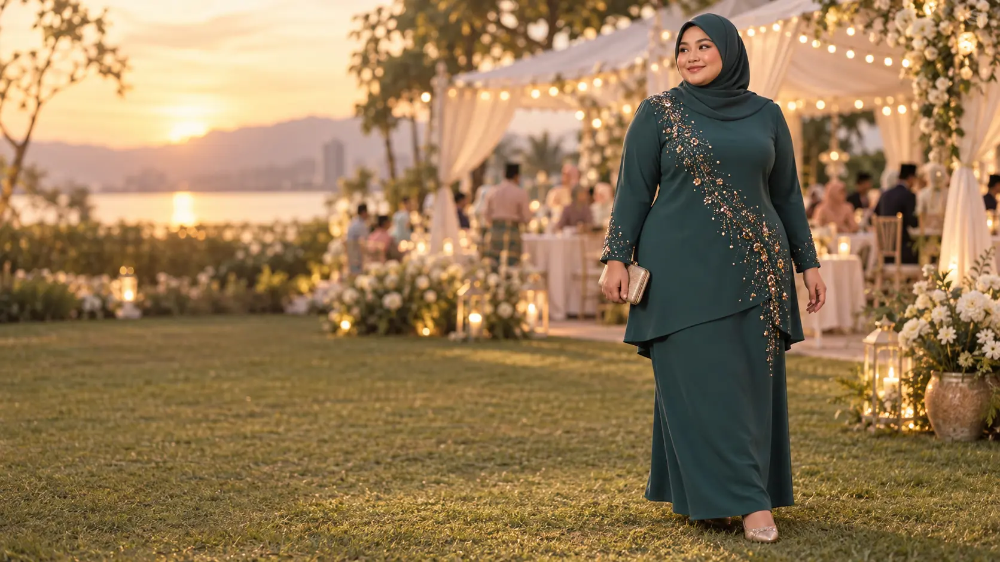
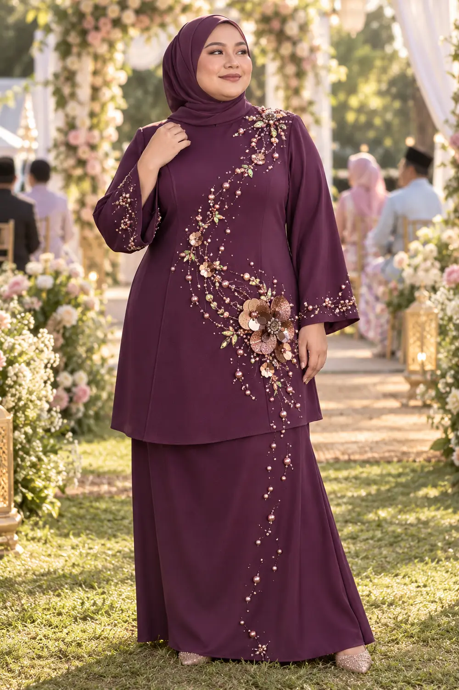

Dada terasa menarik
Ruang depan dan belakang perlu dinilai sebagai satu pola, bukan sekadar menambah lebar.
Baju Kurung Plus Size Malaysia
CURVA membangunkan baju kurung dengan perhatian pada dada, lengan atas, pinggul dan jatuhan depan. Pilih ready size XXL–4XL atau bincangkan custom 5XL+ melalui WhatsApp.
Semak saiz dengan CURVA ↗
Masalahnya sering pada pola
Ruang depan dan belakang perlu dinilai sebagai satu pola, bukan sekadar menambah lebar.
Lengan atas memerlukan perhatian khas untuk bergerak, duduk dan mengangkat tangan.
Panjang dan keseimbangan pola perlu diuji pada fitting sampel badan curve.
CURVA fit priorities
Menjadi fokus semasa pembangunan dan fitting sampel.
Dinilai untuk pergerakan dan posisi duduk.
Proporsi bawah dipertimbangkan bersama bentuk atasan.

Concept renderSignature direction 01
Motif asimetri dari bahu ke pinggul untuk arah visual yang panjang dan focal point yang sengaja sedikit pelik.
Size reassurance
LD bermaksud lilit dada pakaian. Angka ukuran belum dipaparkan sehingga sampel fizikal diukur dan disahkan.
Trust, tanpa cerita rekaan
CURVA menunjukkan status maklumat secara terbuka sementara sampel, polisi dan operasi dilengkapkan.
Konsultasi saiz dan custom tersedia melalui nombor CURVA.
Courier, rate, coverage dan ETA masih perlu disahkan.
Information requiredPayment method dan proses pengesahan masih perlu diputuskan.
Information requiredSemua imej semasa ialah concept render sehingga foto sampel sebenar tersedia.
Customer proof placeholder
Diisi selepas pelanggan sebenar menilai fitting dan keselesaan.
Diisi dengan izin pelanggan selepas produk fizikal diterima.
Diisi selepas aliran penghantaran sebenar sudah berjalan.
Sebelum WhatsApp
Belum dipaparkan kerana ukuran pakaian perlu disahkan daripada sampel fizikal.
Boleh dikonsultasikan berdasarkan ukuran badan melalui WhatsApp.
Boleh dibincangkan. Feasibility, bahan, harga dan tempoh akan disahkan sebelum order.
Information required: costing dan production lead time belum tersedia.
Information required: butiran operasi dan polisi ini belum diberikan untuk paparan awam.
Belum. Semua imej semasa ditandai concept render dan perlu diganti dengan foto sampel sebenar.
Satu primary action
CURVA akan membantu membezakan pilihan ready, custom dan maklumat yang masih menunggu pengesahan.
Mulakan konsultasi WhatsApp ↗